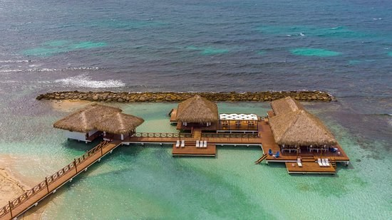
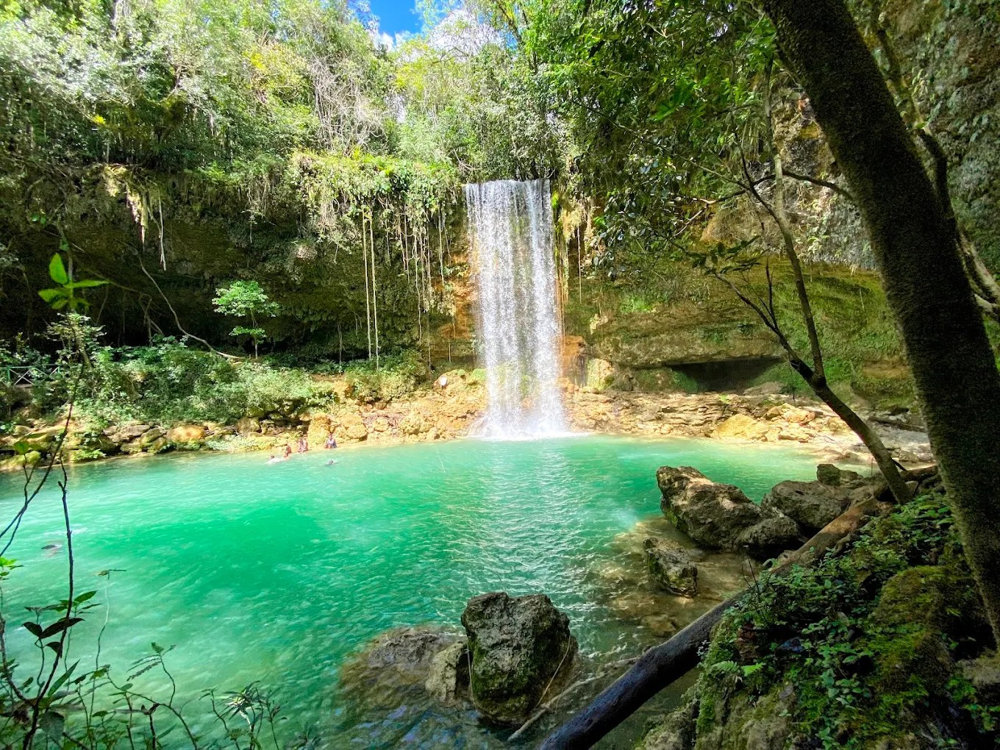
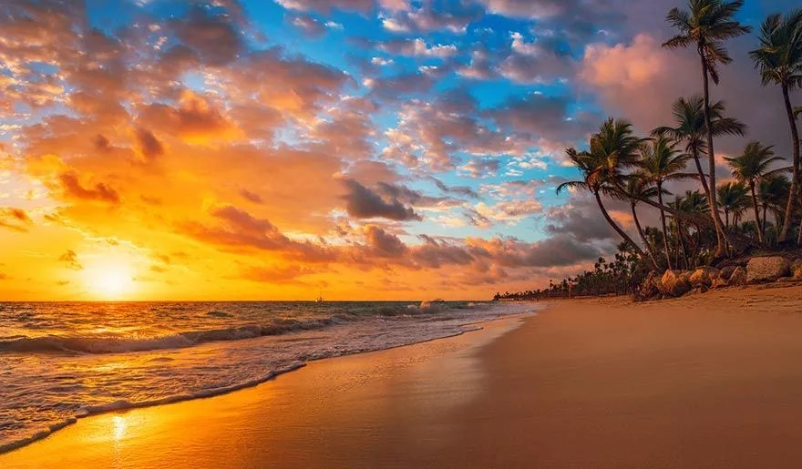
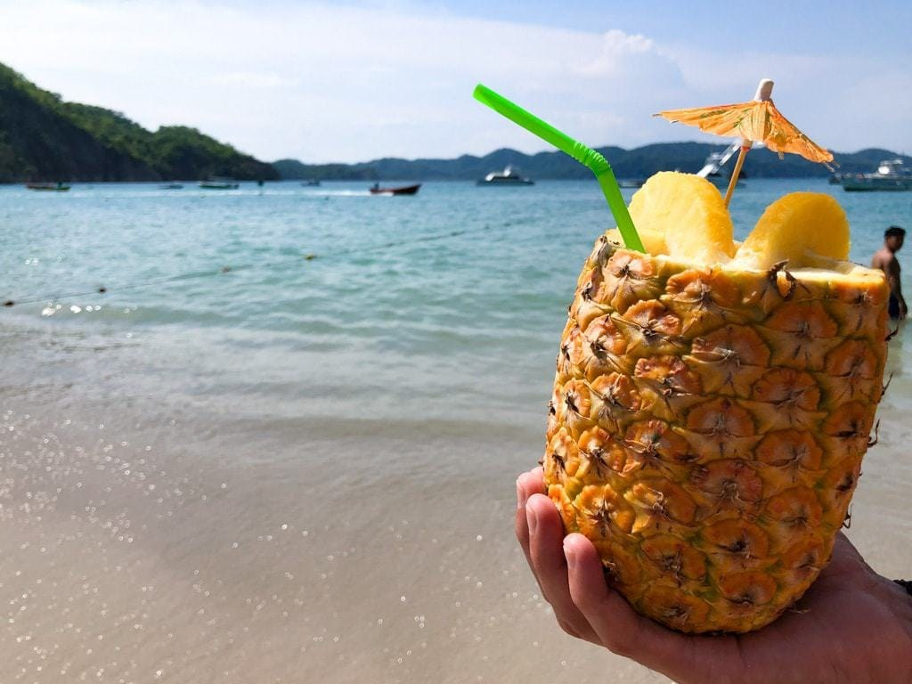

Arrive & settle in
Arrive in the Dominican Republic, settle into Club Hemingway, meet the group, and gather for a welcome dinner at Embocadera.
MARCH 8–14, 2027 · DOMINICAN REPUBLIC
Movement. Nature. Culture. Connection.
Seven days in two extraordinary coastal towns — Juan Dolio and Las Terrenas — with space to practice, explore, and simply be.
Explore the journey → Club HemingwayJuan DolioReservations not yet confirmed
Club HemingwayJuan DolioReservations not yet confirmed
 Casa SimbaLas TerrenasSample property · not confirmed
Casa SimbaLas TerrenasSample property · not confirmed
Seven days, thoughtfully paced — with room for the unexpected.

Arrival & Deep Green
Deep Green
Socoa Las Terrenas
Las Terrenas El Limón
El Limón
Playa Cosón
DepartureArrive in the Dominican Republic, settle into Club Hemingway, meet the group, and gather for a welcome dinner at Embocadera.
Join an educational and service-oriented experience with Deep Green Foundation, with a focus on coral or mangrove conservation to be confirmed. Gather for family-style dinner at The Boat House.
Visit Socoa Waterfall, transfer toward Las Terrenas, settle into the sample villa, and dine at Hotel Atlantis near Playa Bonita.
Open time for beach, exploration, rest, or optional self-guided activities. Dinner at Porto by Mosquito.
Visit El Limón Waterfall, enjoy lunch at Restaurante Santi, then dinner at Onno’s.
Keep the day open for a swim, local discoveries, rest, or adventure. Come together for dinner at Tres Caravalle.
Breakfast, check-out, and departure.
JUAN DOLIO · DAYS 1–2
Intended south-coast accommodation, set in a beachfront tropical community. Specific unit, room allocation, rates, availability, and included facilities still need confirmation.
Explore the official gallery ↗Reservations and room assignments are not yet confirmed.
LAS TERRENAS · DAYS 3–6
Sample villa option for the north-coast stay. Verify current amenities, capacity, availability, rates, and suitability directly with the host.
View the sample listing ↗This is a sample option only; no reservation or room allocation is confirmed.
Distinct places, real local context, and images selected to reflect the Dominican Caribbean.
Boca Chica · ConservationEl Limón WaterfallImages are presented for visual reference and are not clickable links. Confirm venue arrangements and image usage rights before commercial promotion.
From Juan Dolio to the Samaná Peninsula. Pins show approximate planning locations, not turn-by-turn directions.
The map needs an internet connection to load. Stops include Juan Dolio, Boca Chica, Socoa Waterfall, Las Terrenas, and El Limón.
The dotted line is a schematic itinerary sequence, not a verified road route or travel-time estimate.
MARCH 8–14, 2027